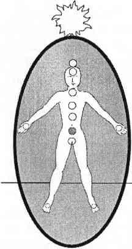

İKİNCİ ÇAKRA HARA ÇAKRASI
Bu sıcak turuncu renkli, kabul edici, kavrayıcı çakra, bedenin orta yerinde tam göbek deliğinin altındadır. İkinci çakra tüm duyguların, cinsel kimliğimizin ve birinci çakranın üremek amaçlı cinselliğinin ötesinde cinselliğimizin merkezidir. İkinci çakra üreme organlarımız olan yumurtalıklarla ya da erbezleri ile doğrudan bağlantılıdır.

İkinci çakranın cinselliği, bağlılıkla, cinsel kimlikle, cinsel rollerle ve bir sevgili ile bütün olmakla ilgilidir. İkinci çakra aynı zamanda cinsel olmayan durumlarda da karşımızdaki ile bedensel empati kurmamızı sağlar. Bu özellikle kişisel durumlarda sınırların çok önem taşıdığı zamanlarda her zaman iyi sonuçlar vermez.
Pek çok durumda birinci çakralarına bağlı olmayan bireyler birinci çakraların maddi dünya ile yarattığı bağın güçleneceği hissiyle ikinci çakralarından topraklanmaya ve odaklanmaya çalışırlar. İkinci çakranın her şeyi duygular aracılığıyla bir araya getirme özelliği yüzünden bu, sorun yaratacaktır. Sağlıklı bir çakra sisteminde bu birleştiricilik güvenle kullanılabilecekken sağlıksız bir sistemde ikinci çakrada odaklanmış bir kişi duygusal bağımlı biri haline gelecektir.
Tek başına kullanıldığında ikinci çakranın cinsel enerjisi sağlıksızdır. İkinci çakra odaklı bir insan, duyguları çok derin bir sevgili haline gelecek ve partnerinden “son nefesine” kadar bağlılık yeminleri isteyecektir. Bunun sonucunda da ömrünü, kendisini insanüstü bir sevgiyle sevecek insanı aramakla tüketecektir. En doğrusu birinci çakrayı çalıştırmak ve “sabah akşam cayır cayır yanan aşkın” cinselliği ile ikinci çakranın “romantik idealleri” arasındaki dengeyi sağlamaktır.
İkinci çakra aynı zamanda da cinsel kimliğimizin merkezidir. Tüm insanların eril ve dişi yanları arasında psikolojik, duygusal, fiziksel ve spiritüel bir denge kurmaları gereklidir, ancak çoğumuz bunu başaramayız. Cinsel kimlik ve cinsellik birbirine karışır. Dengesizliğin belirtileri ikinci çakranın performansında kendini gösterir. İkinci çakra benliğimizde, odaklanmış, dışa dönük, eril enerjiye karşın, ne kadar sözel, kabul edici dişi enerjisine izin verdiğimizi gösterir.
Cinsel dengeyi sağlamış olup olmadığımızı kontrol etmenin en iyi yolu ikinci çakramızın önüne iki küçük yorumlama gülü yerleştirmektir. Sol tarafınıza dişi enerji yorumlama gülünüzü yerleştirin. Sağ tarafınıza da eril enerji yorumlama gülünüzü yerleştirin. Her iki gülün de temsil ettikleri cinsiyetin sembolü olmasına izin verin ve özellikle birbirlerine karşı nasıl tepki verdiklerini gözlemleyin. Eğer güllerden biri kocaman ve parlak olurken diğeri karanlık ve solmuş bir hale gelirse büyük bir denge sorununuz var demektir.
Bu gülleri iyice inceledikten sonra gül yorumlama bölümünü yeniden okuyun. Bu güllerin cinsel kimlik dengenizin birer illüstrasyonu olduğunu unutmayın. Bu dengesizlik incelenip, üzerinde düşünülüp iyileştirilebilir.
Yorumlama gülleri ile cinsel kimlik sorunlarınızı gördükten sonra bu güllere teşekkür ederek onları yok edin ve yerlerine güçlü, sağlıklı, topraklanmış nöbetçiler yerleştirin. Bu yeni nöbetçileri cinsel kimlik dengesizliğinizin iyileşmesine adayın. Onlara özel koruma, topraklanma yetenekleri bahşedin ve parlak renklerle süsleyin. Bu nöbetçiler sadece eril ve dişi enerji dengesinin iyileşmesinin başlangıcı olmayacak aynı zamanda toplumdan alacağınız hastalıklı cinsel kimlik takıntısı mesajlarına karşı da sizi koruyacaktır.
Her çakranın kendisine özgü psişik bir yeteneği vardır ve bu psişik yetenek, içinde bulunduğumuz karmaşık, bilinçsiz durumda yanlış anlamalara yol açabilir. İkinci çakra beden düzeyindeki empatiyi iyileştirir ve iletişimi sağlar. Günlük hayattan bu bedensel empatiye verilecek en güzel örnek, birinin testislerine tekme atıldığını gördüğümüz zaman hissettiklerimizdir. Testisleriniz olmasa bile siz de tekmeyi neredeyse hissedersiniz.
Bir başkasının acısını hissetmek; tepkilerini ve duygularını derinden anlayabilmek önemli bir beceridir. Bu tür derin bir duygunun yarattığı sorun bir başkasının enerjisinin sizin bedeninizde İşleyemeyeceğini anlayabilmektir. Başkalarının acısını gerçekten iyileştirmenize imkan yoktur çünkü onların araçlarını kullanamazsınız. Herkesin acısı kendine mahsustur ve her acı kendine mahsus araçlarla birlikte gelir.
Sizin cinsel kimlik dengesizliğinizi sizin için tamir edemesem bile size araçlarınızı bulmanızda yardımcı olabilirim. Eğer sizin acınızı ve karmaşanızı kendi bedenime çekersem kısa bir süre kendinizi iyi hissedersiniz ancak öğrenmeniz gereken dersi asla öğrenemezsiniz. Aynı sorun ya da ona çok benzeyeni kısa bir süre sonra geri dönecektir. Buna ek olarak sizin acınız benim ikinci çakramda, şayet onu topraklayacak kadar bilinçli değilsem, çakılıp kalacaktır.
İkinci çakralarını kullanarak çalışan durusezi (clairsentience) şifacılarına “sünger şifacılar” adı verilir. Başkalarının sıkıntılarını sünger gibi emerek şifa verme yolunu seçen bu insanlar mucizeler yaratmalarına karşın genellikle ya kanser olurlar ya da organları bitirici hastalıklardan ölüp giderler. Bunun nedeni bedenin kendisine ait olmayan enerjiyi iyileştirememesidir. Sistem kendisine ait olmayan yabancı enerji altında çöküşe uğrar. Kariyerleri boyunca mucizevi tedaviler başarsalar bile bedelini çok ağır öderler.
Örneğin benim intihara meyilli depresyonum, benim enerjimle ve hücrelerim tarafından özel bir sebeple yaratılmıştı; depresyonumu tedavi etmem benim yeni bir kişisel farkındalık seviyesine ulaşmama neden oldu. Hastalığımı tedavi edebileceğim araçlar bana hastalığımla birlikte sunulmuştu. Rehberliğe, besleyici desteğe ve bilgiye gereksinim duymama karşın hastalığımın tedavisi bana hastalığımla birlikte sunulmuştu. Bu araçlara ulaşmam ikinci çakra enerjimi kendi üzerimde kullanmamla mümkün oldu. İntihar arzum ile empatik bağ kurmam sonucu bu duyguların niye bedenimi işgal ettiklerini anlayabildim. Depresyonumun çocukluk sorunlarımla iletişim kurmamı nasıl engellediğini gördükten sonra bu takıntımdan kurtulmayı başardım. Hastalığımla savaşmak, ilaçla uyuşturmak ve ondan nefret etmek yerine empatik yeteneklerimi kullanarak onun enerjisini hastalığımı iyileştirmek için kullandım.
İkinci çakram bana her dengesizliğin belirli, hatta bazen koruyucu bir niteliği olduğunu gösterdi. Kargaşa içindeki bir beden yenilgiyi kabul etmek yerine hayatta kalabilmek için elinden geleni yapıyor demektir. Depresyonum bana oluşum sebebinin uğradığım taciz olduğunu gösterdikten sonra daha da ileri gidip deliliğe neden olmadan bölünmeyi tedavi edebildim.
Eğer bir şifacı olarak bir başkasının derdini mucizevi bir şekilde o kişiden emerseniz, o insanın yalnızca kişisel güç ve farkındalık seviyesini yükseltme fırsatını elinden almazsınız aynı zamanda da kendinizi gereksiz bir tehlike altına sokmuş olursunuz. Başkalarının sıkıntılarının sahibi olmadığınız için bu sıkıntıları tedavi edecek araçlara da sahip değilsinizdir. Başkalarının sıkıntılarını kendi bedeninize sokmak sizin üstünüze vazife değildir. Eğer insanları seviyorsanız ve onlara yardım etmek istiyorsanız onların dertlerini üstlenmeyin, onlara dertlerinden kurtulabilmeleri için yol gösterin, onların dertlerini kendi bedeninize hapsetmeyin. Eğer kendinizi seviyorsanız iyi bir şifacı olduğunuzu ispat etmek uğruna kendinize zarar vermeyin. Diğer çakralarınızın iyileştirme yeteneklerini kullanın ya da daha iyisi hepsini aynı anda iyileştirin. Eğer bunu gerçekleştirseniz diğer insanların acısını o acıyla bir olmadan da anlayabilirsiniz.
İkinci çakranızın ne kadar açık ve alıcı durumda olduğuna dikkat edin; günlük hayatta farkında bile olmadan yüzlerce durumda enerjiyi sünger gibi emiyor olabilirsiniz. Temizlik işinde, organizasyon işinde, nakliye işinde başarılı olan insanlar, kirleri kazırken ya da yeni bir dosyalama sistemi yaratırken eskimiş enerjiyi ikinci çakralarıyla sünger gibi emerler. Başarılı kişisel danışmanlar ya da psikologlar karşılarındakinin stresini ortadan kaldırırken farkında olmadan o stresi emerler. Hemşireler çok iyi bilinen sünger şifacılardır. Masajcılar, mahkeme muhabirleri, idareciler, muhasebeciler, ana babalar ve sosyal hizmet çalışanları da öyledir. Bu liste uzadıkça uzar; kadınlar sıkıntıları emerek temizlemekte erkeklerden daha başarılı olsalar da erkekler de onlardan geri kalmaz.
Bir sünger şifacı olup olmadığınızı anlamanın en iyi yolu üçüncü çakranızın yorgunluk düzeyini kontrol etmenizdir. Eğer hafta sonunda bitkin durumdaysanız, mideniz sürekli ağrıyorsa ve koruyucu güneş sinir ağı çakrası üzerine yağ depoluyorsanız; eğer evinizden uzakta uzun tatillere gereksinim duyuyorsanız, bu, günlük olarak herkesin derdini emmekte olduğunuzu gösterir. Kendini yorgun hissetmek ve evden bir süre için uzaklaşmayı istemek normaldir ancak sürekli mide ağrısı ya da karın kısmında yağlanma, koruyucu üçüncü çakranızın yardıma ihtiyacı olduğunun işaretidir. Hem kendisini hem de ikinci çakrayı korumaya uğraşmaktadır. Sürekli olarak uzaklara kaçmak istemek de sünger şifacı olduğunuzun açık bir işaretidir. Duygusal ve spiritüel sınırlarını belirlemiş kişilerin oldukları yerden kaçmaya ihtiyaçları yoktur.
İkinci ve üçüncü çakralarınızın önüne yerleştirebildiğiniz kadar çok nöbetçi yerleştirin; her iki çakranın da boyunu ve sağlığını mümkün oldukça kontrol edin. Kendinize tekrar tekrar her şeyi ve herkesin derdini halledemeseniz bile varolacağınızı; değerli olduğunuzu söyleyin. Çevrenizdeki sorunları emme yeteneğiniz önemlidir ama ancak dengeli sağlıklı ve farkında bir enerji bütünlüğünde olduğunuz zaman. Eğer emme yeteneğiniz diğer yeteneklerinizden öne çıkıyorsa o zaman büyük bir spiritüel ve fiziksel dengesizlik yaratırsınız. Duyguları temizlemek büyük bir yetenektir, aynı zamanda sağlıklı bir spiritüel araçtır.
Bu aracın en güvenli kullanılabileceği yer aynı aileye mensup bireyler arasındadır, özellikle de anne, baba ve çocukları arasında. Annenin ya da babanın çocuklarının acıyan yerlerini ya da yaralarını öpmelerinin inanılmaz iyileştirici gücü vardır. Ana babanın öptüğü yerdeki acı anında mucizevi bir şekilde yok olur. On üç yaşın altındaki çocukların ebeveynleri ile enerji bağları vardır bu yüzden bu tür bir acı emme işleminin anne ya da babaya hiçbir zararı dokunmaz.
Kardeşler arasında ya da büyükanne ve büyükbabalarla torunlar arasındaki sünger şifacılık da zararsızdır çünkü genetik ve duygusal malzeme hasara yol açmayacak kadar aynıdır. Ben bu tür bir temizliğin yalnızca böyle bağları olan insanlar arasında yapılmasını öneririm. Diğerleri ile bu yöntemi uygulamak hem güvenli değildir hem de gereksizdir. Eğer mucizevi bir şekilde sorunları ortadan kaldırırsanız insanların bu sorunlardan öğrenecekleri derslere de müdahale etmiş olursunuz.
Sünger şifacılar genellikle kendi iç duygusal gerçekliklerinden kopukturlar. Çünkü duygularının ve duygusal ihtiyaçlarının merkezi olan ikinci çakraları sürekli başkaları ile meşguldür. Duygusal karmaşaları o kadar yoğundur ki, bir sünger şifacı, kendisi farkına bile varmadan yıllarca kullanılabilir. Onları kullanan kişilerin hayatı işte bu gerçeğe bağlıdır.
Dengesi bozulmuş sünger şifacılar başkalarının enerjisi ile o kadar fazla doludurlar ki kendi duygularının farkında değildirler. Duygusal enerjileri daimi olarak başkaları için kullanılmaktadır. İşte bu yüzdendir ki çoğu sünger şifacı durumları kendilerini öldürüyor bile olsa, bunu yapmaktan vazgeçmezler, çünkü böylece kendi duygularından uzakta kalmayı başarmaktadırlar. İçlerindeki karanlıkta kalmış kendi acıları, başa çıkamayacakları kadar kocamandır. Bu kişiler için başkalarının dertlerini emmek kendi içsel travmalarının yarattığı korkudan daha güvenlidir.
Bu tür kişiler manipülatif insanlarla ilişkilerinde büyük tehlike altındadırlar. Sınırları olmadığı için tacize davetiye çıkarırlar. Bir sünger şifacının aura ve çakra sistemi kötü enerjilere şöyle demektedir: “Buyurun gelin, içeri girin, burası harika!” Korumadan eser yoktur!
Bu taciz talihsiz ama durdurulabilir bir süreçtir. Unutmayın ki, sünger Şifacılığı da tıpkı diğerleri gibi bir sözleşmedir ve katlanıp, kıvrılıp, yakılabilir. Bu işlemi uzun bir süredir yapıyor olmak hep yapılacaktır demek değildir. Sünger şifacılar kendi ikinci çakralarının bilincine vararak duyguları yönlendirebilirler. Tedavi etme yeteneklerini ikinci çakralarına bağlayan bu tür kişiler kısacık bir zamanda başkalarının dertlerini üstlenmeye tamamen ilgisiz bir hale gelebilirler.
Sağlıklı ve dengeli bireylere açık olan o kadar çok bilgi ve tedavi enerjisi vardır ki, ikinci çakralarını başkalarının tedavisine adamaları gerekmez. Kendi duygularının onlara sunduğu iyileştirme bilgisine yönelerek başkalarının sorunlarına sağlıklı bir biçimde eğilebilirler.
İkinci çakra ile çalışmak çok basittir. Haftalar boyunca endişelenmek ya da kapanması için yalvarmak gerekmez. Tüm gereken, farkındalık ve değişim arzusudur. Bu çakra tanımlamalarını takip eden yorumlama ve iyileştirme bölümüne geldiğinizde yaralı ikinci çakranıza özel bir ilgi gösterin ama esas olarak diğer çakralarınızla dengelenmesine özen gösterin. Bu denge ikinci çakranızın iyileşmesine her şeyden daha çok yardımcı olacaktır.
İkinci çakranın çok fazla kullanılması topraklanma, psişik korunma, kendini sevme ve beden ruh iletişiminde sorunlar yaratır. İkinci çakrayı tedavi etmek yardımcı olacaktır ama tam bir bütünlük için çakra sisteminin yeniden dengelenmesi gerekir. Yoksa diğer çakralardaki sorunlar kendilerini ikinci çakraya atarlar ve sünger şifacılığa tekrar dönülmüş olunur.
En sağlıklı çakra tümüyle çalışan bir sistem içindeki çakradır. İkinci çakrayla ilgili bir sorun sadece sizin değil sistemdeki tüm çakraların yardımını gerektirir. Bir kez iyileştirdiğiniz ve diğer çakralarla dengelediğiniz zaman ikinci çakranız diğer çakralardan ihtiyacı olan desteği görecek ve tedavi edilecektir.
KAPALI YA DA AÇIK İKİNCİ ÇAKRA
Dengesi bozulmuş bir çakra sisteminde geniş ve açık ikinci çakra derhal normal açıklığına getirilmelidir. Bu çakranın alıcı ve korunmasız oluşu siz daha farkına bile varmadan dolanmakta olan yabancı enerjileri içine çekecektir. Bu çakrayı bir kameranın objektifinin kapanması gibi hayal ederek ya da ellerinizi kullanarak normal boyutuna getirin. Hayat boyu süregelmiş bir emicilik söz konusuysa ve siz bu tedavi işinde daha yeniyseniz başlangıçta bu çakrayı diğerlerinden en az 3 cm daha küçük tutmakta yarar vardır. Önünü ve arkasını topraklanmış güçlü ikinci çakra nöbetçileri ile çevirin. Ailenize ait olmayan bir emiciliğin söz konusu olduğu tedavi sonrasında ikinci çakranın uzun bir dinlenmeye ihtiyacı olacaktır.
Çok açık bir ikinci çakranın kapatılması sırasında bir süre manipülatif ve muhtaç insanlardan uzak durulması önerilir. Sadece sizi seven hırpalamayan aile üyeleri ya da arkadaşlarınızla birlikte olun. Eğer çok uzun bir süredir sünger şifacı olarak yaşıyorsanız böyle insanlar bulmakta zorlanabilirsiniz ama mutlaka bir yerlerde bir iki tane böyle dostunuz vardır. Eğer çevrenizde size biraz dinlenmenizi ya da kendinize dikkat etmenizi söyleyen birileri olduysa aradığınız onlardır. İkinci çakranız sizden bir şey beklemeden vermeye hazır insanların desteğine ihtiyaç duymaktadır.
Geniş ve açık ikinci çakra şayet tedavi edilmiş ve dengeli bir çakra sisteminde bulunuyorsa, gelişmenin ve iyileşmenin gerektirdiği duygusal ya da cinsel anlamda açık olmaya işaret eder. Çok açık çakranızın sağlıklı olup olmadığını rengine bakarak anlayabilirsiniz. Sağlıklı bir ikinci çakra rengi hiç başka bir rengin karışmadığı sıcak bir turuncudur. Eğer diğer çakralarınız özellikle birinci ve üçüncü çakralarınız sağlıklıysa ikinci çakranızı bu açıklıkta bir hafta bile bırakabilirsiniz.
İkinci çakranızın önüne ve arkasına güçlü iki nöbetçi yerleştirin ve gözünüzü ondan ayırmayın. Hafta dolmadan kendi başına normal boyuna dönecektir. Dönmezse siz döndürün.
Kapalı ikinci çakranın anlamı duyguların ya da cinselliğe bağlı birleştirici ve duygusal öğelerin kapatılmış olduğunun işaretidir. Çok açık bir birinci çakra ile birlikte görülen kapalı bir ikinci çakra toplum tarafından dışlanmış erkeklerde görülür. Eğer kadın ya da erkek olduğunuz halde eril yanınız çok fazla hırpalandıysa bu dengesizlik karşısında şaşırmayın.
Hayatınızdaki insanlar sizi soğuk ve duygusuz biri olarak tanıdıysalar, sizin vurdumduymaz biri olduğunuzu düşünmeleri normaldir. Sırlarını sizinle paylaşmaz ya da sizi sosyal etkinliklerine dahil etmezler, bu da sizin işinize gelir. Ancak ikinci çakranızı yeniden açtıktan sonra daha fazla izole edilmek istemezsiniz. Bundan kötü etkilenirsiniz. Öfke, keder ve çocukluğunuz ya da gençliğiniz boyunca kapalı tuttuğunuz bütün duyguları hissedersiniz. Bu duyguları yönlendirin. Onlar size aittir ve sizi iyileştirebilir.
Buna ek olarak yanlarında soğuk bir taşa dönmenize izin vermeyen insanlarla birlikte olmaya çalışın. Zamanında size duygusal olarak ulaşmaya çalışan bir ya da iki kahraman çıkmıştır. Sizden bir tepki alabilmek için duygularınızı manipüle eden insanlardan uzak durun. Bunun yerine sizinle duygularını paylaşmış, hatta onları reddetmiş bile olsanız önünüzde ağlamış insanları bulun. Bu kişiler sizin duygusuz davranışınıza asla kanmamış ve şimdi duygularınızı açıyor olmanızdan şaşkınlık duymayacak kişilerdir.
Etrafınızı çeviren duygusal yönden destek veren insanlar tıpkı auranızın içinde nöbetçilerin sizi koruduğu gibi dünyadaki hayat içinde ikinci çakranızı korurlar. Duygusal olarak açık insanların yanında yeni açılmış bir ikinci çakranın darbelere açık hali asla size karşı kullanılmayacaktır.
İkinci çakraları sağlıklı olan insanlar dünyayı gözetirler, dünyadaki hayatlarının anlamını bilirler, başkalarının duygularına ve hayatlarına saygı gösterirler. Öyle ki sağlıklı bir ikinci çakra çevrede dönen kedi köpek kavgalarını durdurucu etki yapar, ikinci çakra sizi başkalarına şefkat duyan bilinçli bir birey yapar. Oysa günümüzde bu fazla rastlanmayan bir özelliktir, çünkü insanlar iletişim kurmaktan ve hissetmekten korkuyorlar. Bunun sonucunda da her gün insanlık suçları işleniyor. Bu da doğal olarak kendilerinden başka her şeyi ve herkesi iyileştirmeye çalışan ve bu yolda ölen binlerce sünger şifacı yaratılmasına neden oluyor.
İkinci çakranızı kapalı tutmanız; onu hissetmeyi ya da onunla sağlıklı bir bağ kurmayı reddetmeniz için milyonlarca sebep vardır. İkinci çakranızı açmak istemenizin tek ve en önemli nedeni bütün bir insan olarak yaşamak istemenizdir. İkinci çakranızın açık durmak için toplumun değil sizin izninize gereksinimi vardır. Hiç kimsenin, hele de hastalıklı bir toplumun size ikinci çakranızı kapalı tutmanızı buyurmaya hakkı yoktur. Eğer bana inanmıyorsanız birinci çakranıza sorun.
İkinci çakranızla çalışmaya başlamanın en iyi yolu suya ve akışkanlığa güvenmektir. Sıcak banyolarla su terapisi kasları gevşetmeye yarar, böylece iskelet rahatlar, bu da daha esnek, daha akıcı bir yürüyüş, duruş ve tavır kazanmanızı sağlar. Akıcı hareketler ve danslar ikinci çakra için özellikle çok yararlıdır.
Duygular ve cinsellik ile ilgili çıkmazlar yaşamak doğaldır ama bunlar yüzünden ikinci çakranızı kapamak enerji sisteminizi ve hayatınızın geri kalanını işlemez bir hale getirir. Eğer duygularınızı ve cinsel kimliğinizi barındıran enerji merkezini kaparsanız sıkıntılarınızı aşamazsınız. Duygusal sıkıntılar yaşarken bile sağlıklı bir ikinci çakraya sahip olmak mümkündür.
Eğer sağlıklıysanız; çakralarınız da sağlıklıysa ve ikinci çakranız hala kapalıysa bunun anlamı tatile çıkmış bir ikinci çakra olabilir. Bütün çakralar zaman zaman tamir için kapanırlar. Eğer sünger şifacılıktan vazgeçtiyseniz ve iyileştirme yeteneklerinizi kendi üzerinizde uyguluyorsanız enerji bedeninizde mucizevi sonuçlar yaratabilirsiniz. Enerji seviyeniz güçlü bir noktaya ulaştığında ikinci çakranız süngerlik sözleşmelerinizle, farklı hastalık ve dengesizlik belirtilerini ortadan kaldırmak için çalışırken diğer çakralarınız ona göz kulak olacaktır. İkinci çakra hazır olduğunda kendiliğinden açılacaktır.
İkinci çakranızın tatile çıkıp çıkmadığından, diğer çakralarınızın sağlıklı olmasına bakarak emin olabilirsiniz. İkinci çakranızı yokluğunda desteklemek için auranızın içine öne ve arkaya iki tane topraklanmış nöbetçi koyabilirsiniz. Bunlar yeniden servise girene kadar çakranızı koruyacak ve iyileşmesine yardım edecektir. Bu süre birkaç gün en fazla bir haftadır.
Bir haftalık tatilden sonra ikinci çakranız işe dönmeye hazır olmalıdır. Eğer hazır değilse ona nedenini sorun ve cevabını dinleyin. Daha canlı bir çakra ya da nöbetçi tarafından korunmaya gereksinim duyuyor olabilir. Koruyucu üçüncü çakranızın tedavi edilmesine gereksinim duyuyor da olabilir. Ona desteğinizi verin. Çakraların her sağlıklı tatilinde yapmanız gerektiği gibi yapın ve bütün çakralarınıza, ikinci çakranızın dinlenmesini hoş görecek kadar farkında ve sağlıklı oldukları için teşekkür edin. Onlara birer merhaba hediyesi verin. Harika bir iş başarıyorlar..
SAĞLIKLI İKİNCİ ÇAKRANIN ÖZELLİKLERİ
İkinci çakra sağlıklı olduğunda; temiz, turuncu ve ılık enerji salgıladığında, beden, birinci çakranın odaklanıp topraklanmış enerjisine ek olarak huzurlu ve duyarlı bir konumdadır. Sağlıklı ikinci çakra, kişinin kendisiyle, doğayla, hayvanlarla, insanlarla ve spiritüel dünya ile bağ kurmasını sağlar. Sağlıklı bir cinsel kimlik dengesi, şefkatli, odaklanmış, duygusal ve spiritüel farkındalık sahibi kişiler yaratır. Sağlıklı ikinci çakra sahibi insanlar kedi gibi rahat ve çevik yürürler. Olayların akışı ve çevrelerindeki kişiler konusunda derin bir anlayışa sahiptirler. Kendi duyguları ile iletişim halinde olmaları onları dünyanın geri kalanına bağlar.
Sağlıklı ikinci çakralar aynı zamanda inanılmaz boyutlarda içsel tedavi sağlarlar. İkinci çakranın tüm empatisi hastalığa yöneltildiğinde hastalığın duygusal sebebine inebilirsiniz. İkinci çakranın yeteneklerini kendi içlerinde kullanabilen durugörülü kişiler kanser hücreleri, virüsler, dokular ve hastalıklarla konuşabilir ve onlara neden bu bedende yaşadıklarını (ya da öldüklerini) sorabilirler. Her hastalığın barındırdığı temel sebep inanılmazdır. Bu bilgi anlaşıldığında ve en basit düzeyde kabul gördüğünde gerçek iyileşme başlar.
Duygular daima akıldan aşağı görüldüğü halde ikinci çakraları ile sağlıklı bir bağları olan kişiler akılcı bilgiden çok daha ötededirler. Onlar sadece sebeplerin olup olmadığını değil doğru olup olmadıklarını da bilirler. Duygusal nedenlerle bağlantı halinde olmak mantıki nedenleri sadece mantıki olmaktan çıkarır aynı zamanda manalı hale getirir.